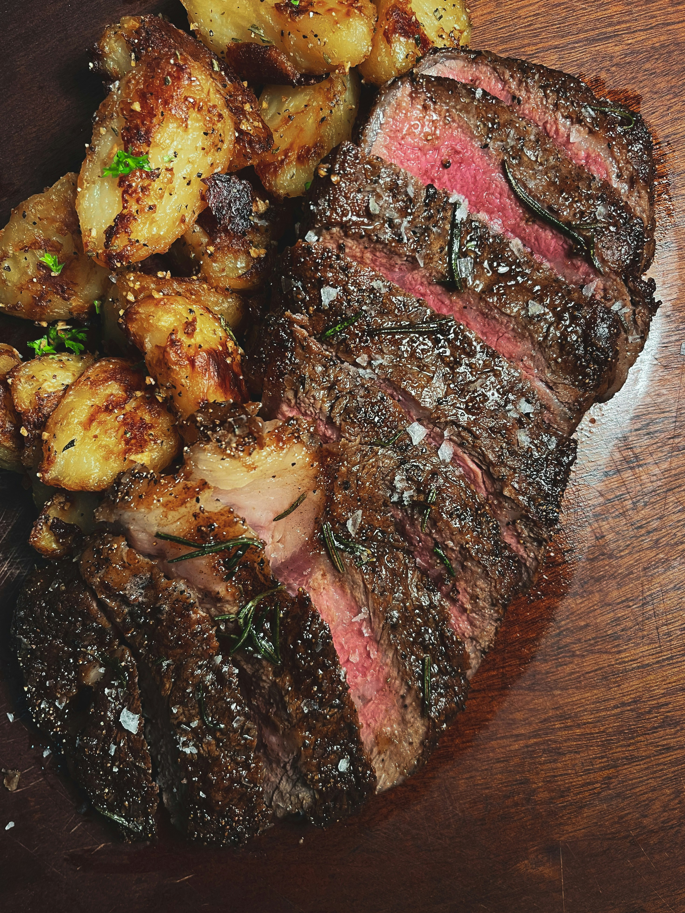

Home
Steak

Description
You wish to cook the perfect steak for you or your dear ones?
Now you can do it with this easy-to-follow recipe.
Ingredient
- 350-400g steak
- garlic
- olive oil
Steps
- Add the steak to the pan.
- Cook the steak for 1 minutes each side.
- Add the garlic on top of it and cook again for 5 minutes each side.
- After that let it rest for another 5 minutes on your cutting board.